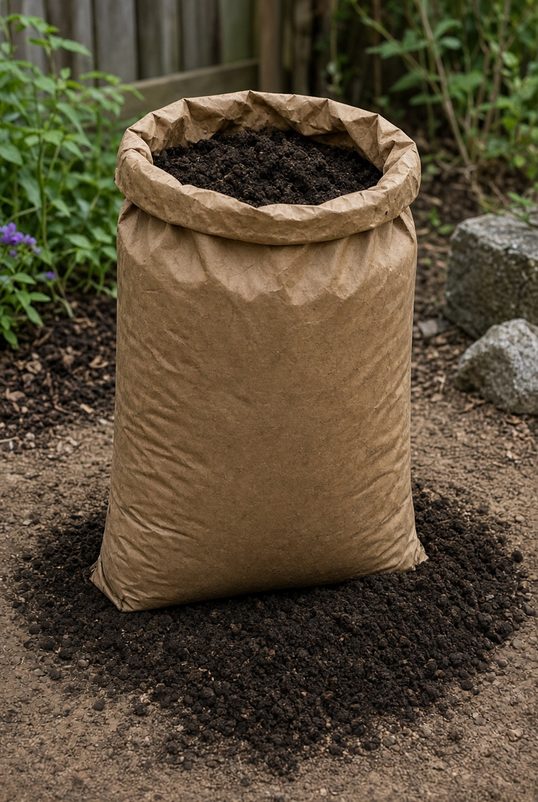
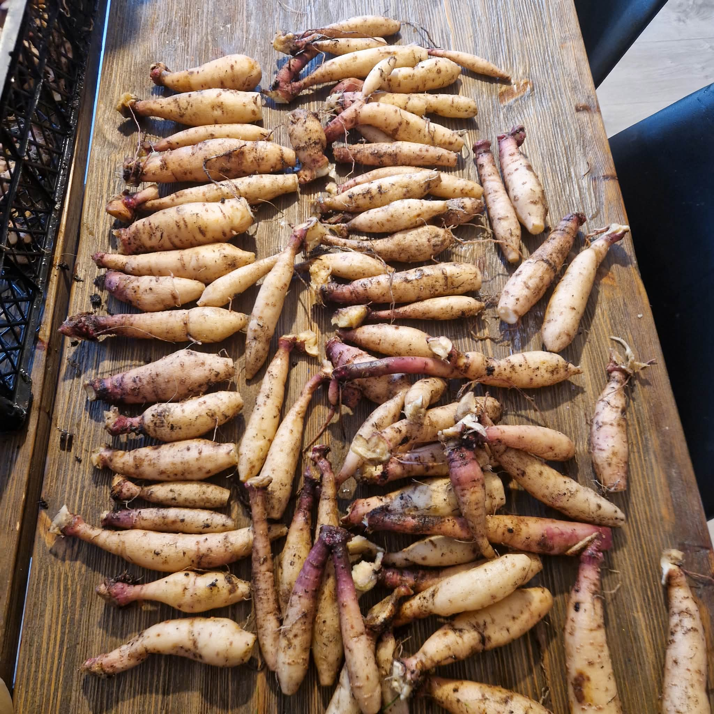
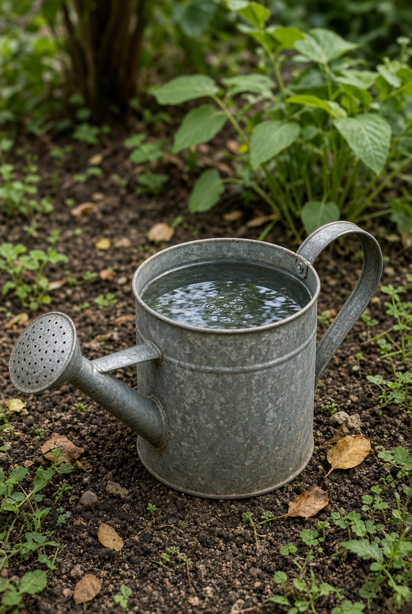

Odlingsguide
Det här är den perfekta guiden för nybörjare
Det här är allt du behöver för att odla dahlior
- Jord

- Dahliaknölar

- Vatten

Vanliga frågor
Vad för jord behövs?
Vanlig matjord du kan köpa var som helst.
Hur ofta behöver jag vattna?
Beroende på vädret såklart, men varje dag om det är torrt annars var tredje dag ungefär känn alltid på jorden först!
Behöver jag ta upp knölarna på vintern?
Ja du plockar upp dom när temperaturen närmar sig 5+ ute, det får inte bli frost för då kan dom dö, sen lägger du dom svalt inomhus på lite papper och låter dom vara tills nästa vår!